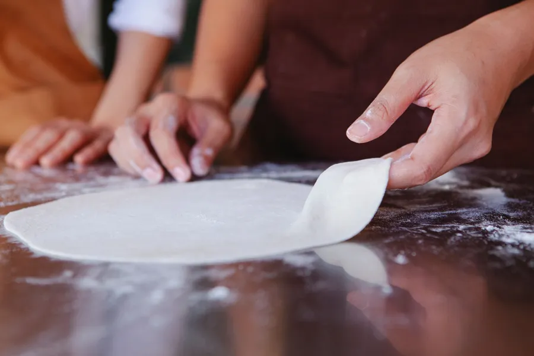
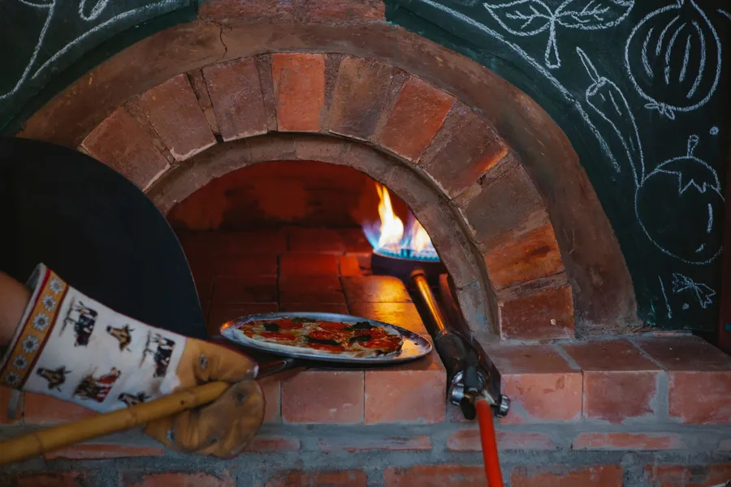

Denizli · Sinpaş & Çamlık
Taş fırın,
Taş fırın,
ince hamur,
sıcak kutu.
Pizza, makarna, tava ve tatlı. Menüden seçin, sipariş fişiniz kendiliğinden yazılsın; şubeyi aradığınızda okumanız yeterli.
Sinpaş0258 502 02 44
Çamlık0258 999 10 83

Bir pizzanın yolu
 03
03
Hamurdan kutuya üç adım.
Ziyaretçi, siparişi vermeden önce mutfağınıza bir göz atar. Yayında bu üç kare sizin ustanızın, fırınınızın ve kutunuzun fotoğrafı olur.

01Hamur
Elde açılan ince hamur, tezgâhta dinlenir.

02Fırın
Taş fırında kısa ve yüksek ısıda pişer.
03Kutu
Gel al ya da paket servisle, sıcak kalsın diye kutuda.
Galeri
Masadan kareler.
Şubeler
İki şube, bir lezzet.
Sinpaş
Çamlık
Beğendiyseniz, bir sonraki misafirimize de söyleyin.
Google'da yorum yazın